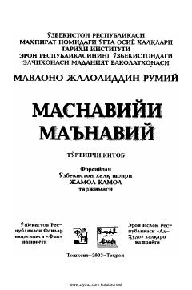

MMJaloliddin Rumiyning falsafiy-tasavvufiy asari bo'lgan 'Masnaviy'ning to'rtinchi kitobi.
Jaloliddin Rumiyning mashhur 'Masnaviyi ma'naviy' asarining o'zbek tiliga Jamol Kamol tomonidan o'girilgan to'rtinchi kitobi. Ushbu nashr fors tilidagi asl nusxalar va ilmiy tadqiqotlar asosida tayyorlangan bo'lib, chuqur falsafiy va tasavvufiy mazmunga ega.